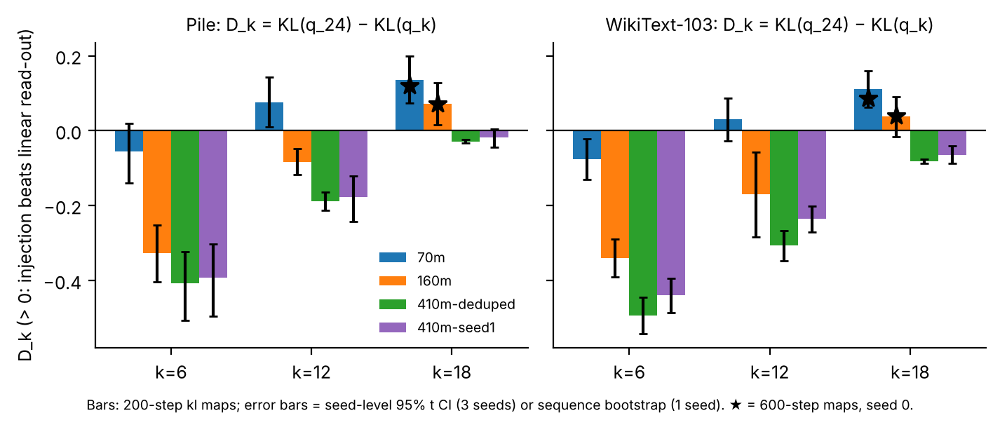
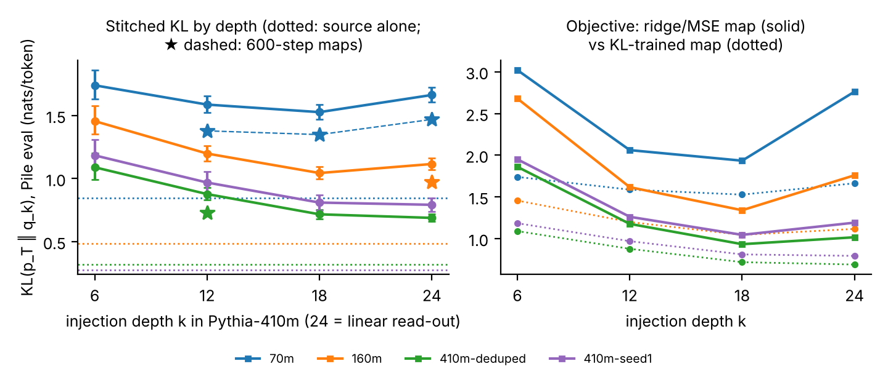
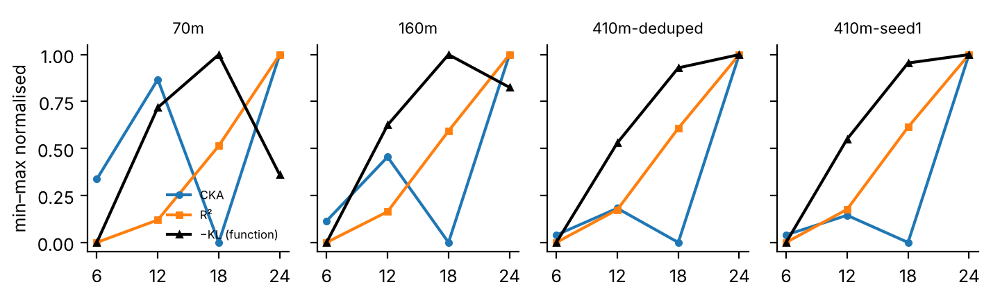
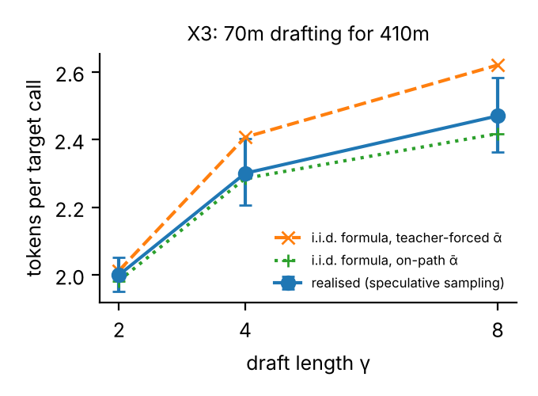

Where is a smaller model's state usable inside a larger one?
Cross-scale stitching in Pythia: injection depth × size ratio × fitting objective. Executive summary (D7) ·
25 Nov 2026 · Full report: docs/09_main_report.md · Repository branch claude/research-programme
Decision: PRELIMINARY FINDING.
For sources much smaller than the target (70m, 160m → 410m), the target's last quarter of blocks reads out the injected state
better than the target's own head. For equal-size siblings this never happens. But no affinely-stitched model approximates
the target as well as the small model alone, so frozen latent injection gives no drafting speed-up at this scale.
1. Executive summary
Question. When does mapping a source model's final hidden state affinely into a target's residual stream at depth
k, then running the target's frozen remaining blocks, produce predictions closer to the target's than (a) a linear read-out
through the target's head, and (b) the source model itself?
Design. One model family (Pythia, shared tokenizer and data order); sources 70m, 160m, 410m-deduped, 410m-seed1;
target 410m (24 blocks); depths 6/12/18/24; ridge vs KL-trained maps; 78 cells; frozen preregistration with disclosed amendments.
Main finding. D18 (gain of depth-18 injection over linear read-out) = +0.136 nats/token for 70m
(seed-level 95% CI [0.074, 0.198], 3 seeds), +0.111 on WikiText, +0.121 with 3× longer map training, and replicated by independent
code (70m→160m: +0.254). 160m: +0.072 [0.015, 0.129]. Equal-size siblings: no depth with Dk > 0.
Practical result. Every stitch is worse than the source alone (Δk < 0 in 16/16 tests). The preregistered
prediction that an equal-size sibling would beat its own source is falsified.
Secondary study (X3). Real speculative sampling, 70m drafting for 410m: the textbook i.i.d. throughput formula is
accurate to 0.6–6%: a negative result for the hypothesised large dependence error.
2. Main finding

Figure 1. Dk = KL(pT‖q24) − KL(pT‖qk); positive means
injecting at depth k beats a linear read-out of the same source. Only the smaller sources have an interior depth with
D > 0, at k = 18. Error bars: seed-level t intervals (3 seeds) or sequence bootstrap (1 seed). Stars: 600-step maps.
3 seeds, Pile CI > 0; WikiText CI includes 0; 600-step: {{160L}}
Moderate
Supported indirectly
Equal-size siblings never benefit
2 siblings, all depths
Strong for 2 pairs
Demonstrated
No affine stitch beats the source alone
16/16 CIs < 0; replication
Strong
Demonstrated
KL objective < 1.5× better than ridge
1.30–1.35× (200 steps); 1.49–1.62× (600)
Budget-dependent
Supported indirectly
Similarity (CKA, R²) peaks at read-out; function interior
4 pairs, descriptive
Weak–moderate
Exploratory
Target's own 1st layer beats 70m stitch early
k = 6: +0.84; tie at k = 12
Strong at k = 6
Demonstrated (k = 6)
Read-out bottleneck
Head + affine map cannot reproduce pS (KL 0.48–0.89)
Moderate
Supported indirectly
Second target (1b)
{{1B}}
Single seed
Not yet established
i.i.d. speculative formula accurate to ~6%
Real sampling, 3 draft lengths
Moderate
Demonstrated (negative)
4. Novelty
Novelty audit class N2–N3 (new controlled design, incremental finding). Recent work disagrees on whether injected
cross-model states are usable mid-depth (2608.09521 "works"; 2606.03280 and 2603.18908 "fail"), but each paper varies depth,
size ratio, objective and metric together. New here: (i) a factorial over size ratio × depth × objective in one family;
(ii) the read-out comparator Dk, which isolates the contribution of the target's upper blocks; (iii) the finding that
the last quarter beats the head only for much-smaller sources. Not claimed as new: stitching itself (Bansal 2021; Chen 2025),
KL-trained maps, or similarity–function dissociation in general.
5. Results

Figure 2. Left: KL(pT‖qk) with KL-trained maps; dotted lines are the source model alone, which
every stitch fails to beat. Right: ridge/MSE maps (solid) are 1.3–1.6× worse; under MSE every pair, siblings included, has its
optimum at k = 18.
Source → 410m
k=6
k=12
k=18
k=24
source alone
D18 [seed-level CI]
70m
1.739
1.587
1.527
1.663
0.847
+0.136 [0.074, 0.198]
160m
1.456
1.199
1.044
1.116
0.486
+0.072 [0.015, 0.129]
410m-deduped
1.090
0.877
0.717
0.689
0.319
−0.028 [−0.034, −0.023]
410m-seed1
1.184
0.969
0.810
0.793
0.275
−0.018 (1 seed)
KL(pT‖·) in nats/token on held-out Pile, 200-step KL-trained maps, mean over available seeds. Bold = best depth.
Controls and ablations
Training budget (adversarial review R1). 3× longer training lowers KL 13–17% at every depth tested but keeps 70m's
D18 at +0.121 [0.097, 0.144]. 160m: {{160L}}.
Same size, different data vs different seed. Both siblings behave alike, so the sign change tracks size ratio, not data.
Identity (no map). Siblings share no usable coordinates (KL 3.5 and 9.5); exploratory hint of a shared initialisation.
Target's own early layers. self:1 at k = 6: 0.90 vs 1.74 for 70m; tie at k = 12; 70m stitch better at k ≥ 18.

Figure 3. Similarity (CKA, R²) peaks at k = 24 for every pair; function (−KL) peaks at k = 18 for 70m and 160m.

Figure 4. X3: realised tokens per target call vs the i.i.d. formula.
6. Limitations
Small models (≤ 1b), one family, CPU, float32; no frontier-scale or cross-family conclusions.
Affine per-position maps only; every failure is relative to that map class.
Three seeds for key cells, one elsewhere; seed-level CIs are wide (n = 3). 64 evaluation sequences per set.
Maps are under-trained by ~15% at 200 steps; the 600-step check covers only 70m and 160m at depths 18 and 24.
The mechanism is open: D18 > 0 may reflect generic extra frozen capacity rather than anything about the small
model's state (the target's own layer-1 state shows the pattern more strongly).
Seeds 1–2 at k = 18 were added after seeing seed 0 (post hoc, disclosed); the preregistered seed-0 test passes alone.
The 1b arm was cut under the preregistered budget rule (160m→1b at k = 4, 8, 16 only).
7. Implications
Reconciling the literature. Mid-depth injection is not usable as a drafter at any size ratio here; relative to a linear
read-out, the target's last quarter adds value only for much-smaller sources, which is consistent with "only late layers work".
Similarity is a poor guide. Choosing a stitching layer by CKA or R² picks the read-out depth, not the functional optimum.
Latent drafting (H2). A frozen small model's state, affinely mapped, is a worse drafter than the small model itself, and the
target's own first layers beat it at early depths. Output guarantees come free from verification; efficiency does not.
8. Next three experiments
Capacity-matched read-out control: give the k = 24 read-out a parameter-matched trainable adapter, and swap in unrelated
frozen blocks, to separate "uses the small model's state" from "extra nonlinear capacity".
Cross-family and absolute-size replication: 160m→1b full grid with 3 seeds, 410m→1.4b, and a second family with a shared tokenizer.
Training dynamics: D18 across Pythia checkpoints, to see when the interior advantage emerges.
Every result file stores its configuration, eval-set hash, training log, FLOPs and per-sequence metrics. All deviations and
decisions are in docs/00_decision_log.md; the independent replication is in replication/.
10. References
Bansal, Nakkiran, Barak (2021). Revisiting model stitching to compare neural representations. arXiv:2106.07682.